Mascot Spike — results
Phase 0 gate from the Character Slideshows spec: can Gemini hold one cartoon character's identity (and the EVEX chest lettering) across many poses? Verdict: yes — 9/9 poses consistent, 9/9 spelled "EVEX" correctly, zero prompt retries needed. Review the images, answer the two decisions at the bottom, and Phase 1 (the actual build) starts.
Portrait variants
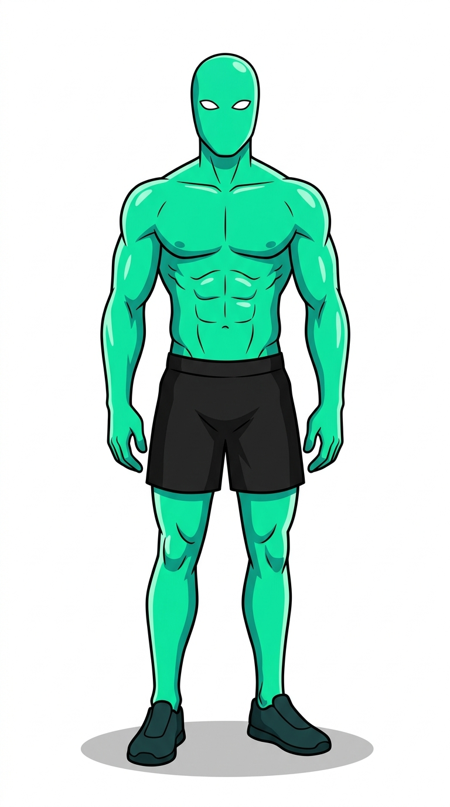
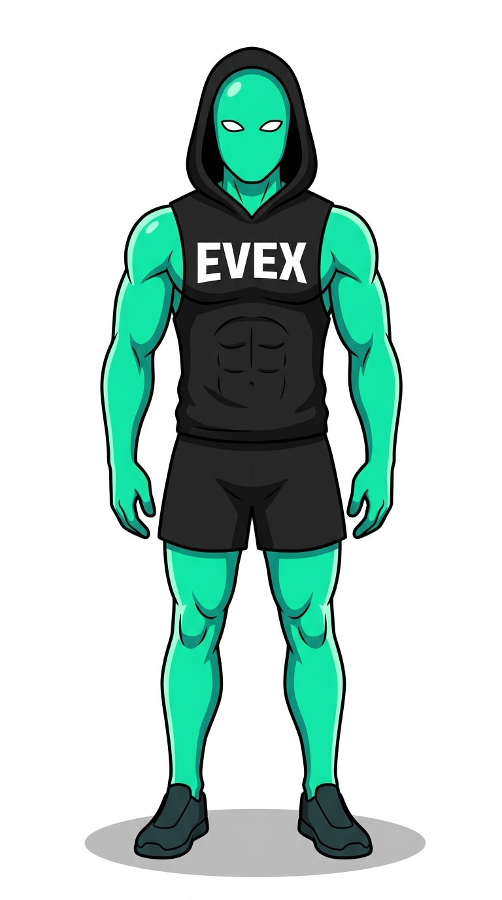
Pose pack test — variant B, 9 poses
Generated from the single portrait as reference image. What to eyeball: same face/eyes, same teal, same outfit, lettering intact, style uniform.
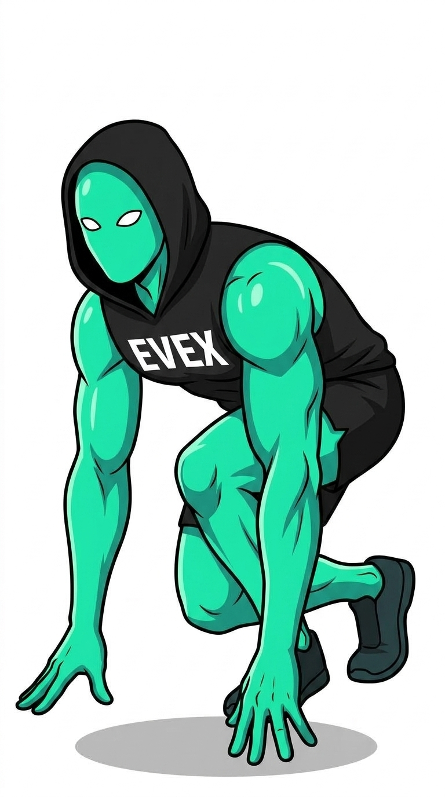
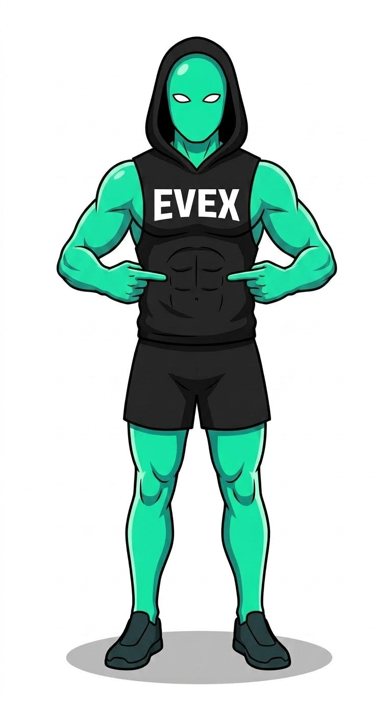
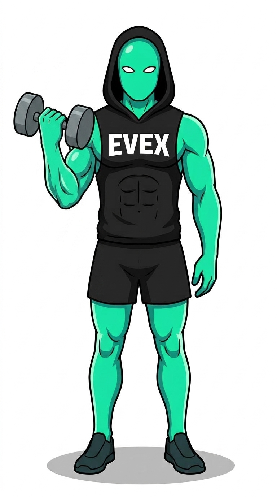
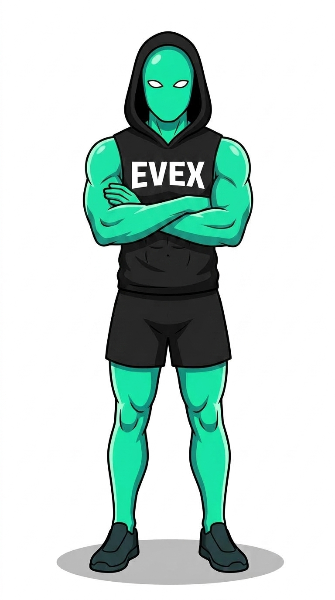
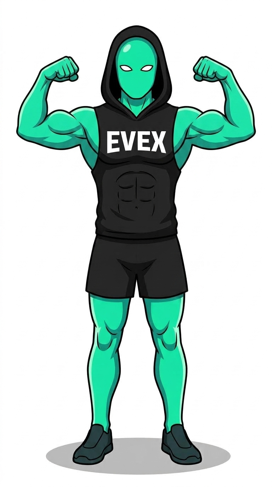
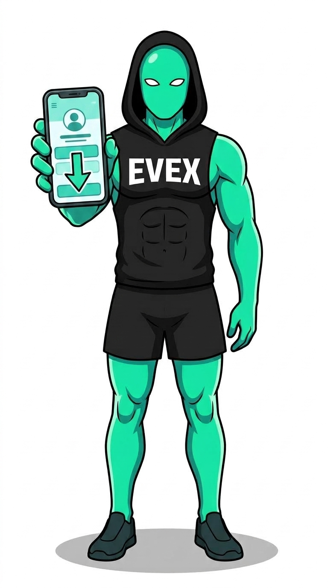
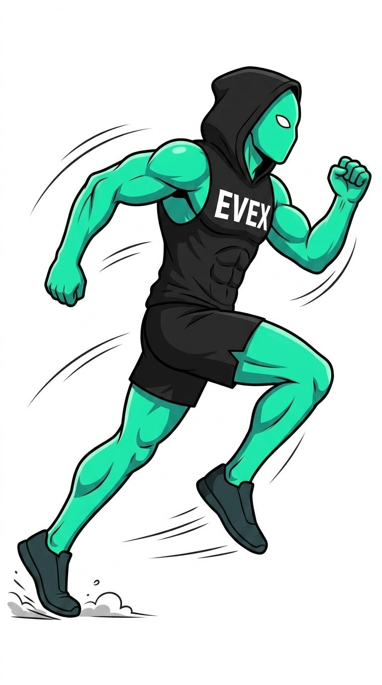
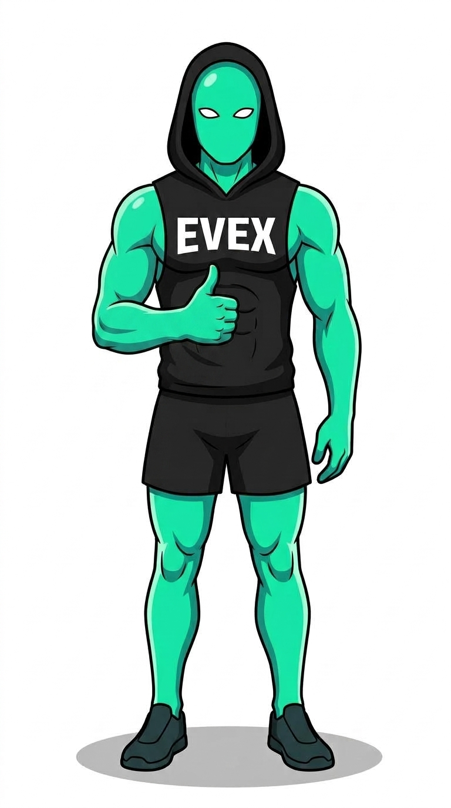
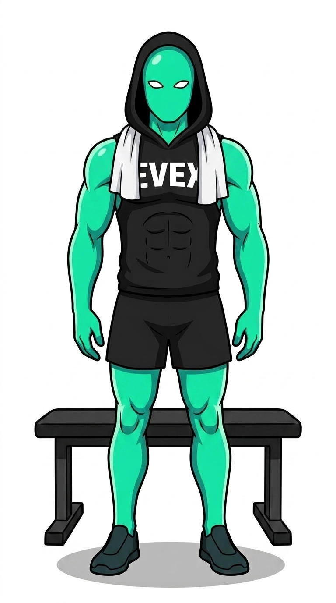
What this locks in for the build
| Finding | Build consequence |
|---|---|
| Identity + lettering rock-solid via reference image | Spike prompt ports to characters.py unchanged; pose pack of ~20 is safe |
| Crops ignored by the model | All poses full-body; scale/crop happens in the PIL compositor (more control anyway) |
| Sitting/lying unreliable; standing + props reliable | Pose bank biased to standing/action/prop poses (list below); UI cull step for the rest |
Planned 20-pose bank (strike any in notes)
sprint start · pointing at abs · dumbbell curl · arms crossed · double-biceps flex · showing phone · full-stride run · thumbs-up · pull-up mid-rep · push-up plank · barbell squat · overhead press · drinking shaker bottle · towel over shoulders · shrug ("no idea") · facepalm · pointing at viewer · pointing up-left (at text) · walking with gym bag · celebratory fist pump
Decisions
Two calls, then Phase 1 builds. Pick, note anything, copy back.
1. Which is THE mascot?
One character is the brand for account #1. (The other variant can still exist as a second character later.)
2. Look tweaks before the full 20-pose pack?
The pack is cheap to regenerate later, but the character should feel right now. Current: mint-teal skin (matches EVEX teal #00F19F), white almond eyes, no mouth, hood up.